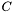
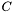
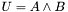
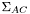
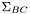
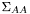
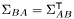
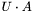

and may be initialized similarly. Note that the covariance matrices you define here need not be of full rank. The error propagation works nonetheless.
and may be initialized similarly. Note that the covariance matrices you define here need not be of full rank. The error propagation works nonetheless. , and  in Euclidean space. Since the Clifford algebra of 3d-Euclidean space is 8-dimensional, the covariance matrix of a multivector in this space is an 8x8 matrix. For example, can be initialized as a vector with a covariance matrix as follows.
, and  in Euclidean space. Since the Clifford algebra of 3d-Euclidean space is 8-dimensional, the covariance matrix of a multivector in this space is an 8x8 matrix. For example, can be initialized as a vector with a covariance matrix as follows.
_FrameBoxSize = 0; _BGColor = White; DefVarsE3(); ?A = 1*e1 + 2*e2 + 3*e3; // Create covariance matrix CA = Matrix(8, 8); // Now set variances for dimensions e1, e2 and e3. CA(2,2) = 0.005; // variance for e1 CA(3,3) = 0.008; // variance for e2 CA(4,4) = 0.002; // variance for e3
Multivectors and may be initialized similarly. Note that the covariance matrices you define here need not be of full rank. The error propagation works nonetheless.
// Multivector B ?B = 1*e1; // Create covariance matrix CB = Matrix(8, 8); // Now set variances for dimensions e1, e2 and e3. CB(2,2) = 0.001; // variance for e1 // Multivector C ?C = 1*e2; // Create covariance matrix CC = Matrix(8, 8); // Now set variances for dimensions e1, e2 and e3. CC(3,3) = 0.006; // variance for e2
We can also define cross-covariance matrices between the multivectors. For the sake of simplicity, we will only define these as zero matrices.
// Cross-Covariance of A and B CAB = Matrix(8, 8); // Cross-Covariance of B and C CBC = Matrix(8, 8); // Cross-Covariance of C and A CCA = Matrix(8, 8);
Now suppose we wanted to evaluate the outer product of and and wanted to know what the covariance matrix of the resultant multivector is. Note that the multivectors are regarded as the mean values of a stochastic process and their covariance matrices give the second moments.
// Combine the multivectors with their corresponding // covariance matrices. LA = [A, CA]; LB = [B, CB]; LC = [C, CC]; // Evaluate the outer product of A and B Res = EPOp(MVOP_OUTER, LA, LB, CAB); // Extract the resultant multivector ?U = Res(1); // ...and covariance matrix CU = Res(2); // Draw the new covariance matrix with latex StartOverlay(); :Black; SetLatexMagStep(5); SetLatexAlign(0, 1); // Draw covariance matrix of A P = DrawLatex(10,10,0, "\[ \Sigma_{AA} = " + Latex(CA) + "\]"); // Draw covariance matrix of B beneath it P = DrawLatex(10,P(2)+4,0, "\[ \Sigma_{BB} = " + Latex(CB) + "\]"); // Draw covariance matrix of U beneath it DrawLatex(10,P(2)+4,0, "\[ \Sigma_{UU} = " + Latex(CU) + "\]"); EndOverlay();
This code produces the following output,
A = 1^e1 + 2^e2 + 3^e3
B = 1^e1
C = 1^e2
U = 3^e31 + -2^e12
and the following visualization
So now we have the mean value of the outer product of and and the covariance matrix of  . However, if we wanted to keep on calculating with  , we would probably need the cross-covariance matrices of and , and , and and . This is necessary since is now correlated with and . The corresponding cross-covariance matrices can be calculated directly with EPOp() as follows. The line
, we would probably need the cross-covariance matrices of and , and , and and . This is necessary since is now correlated with and . The corresponding cross-covariance matrices can be calculated directly with EPOp() as follows. The line
Res = EPOp(MVOP_OUTER, LA, LB, CAB);
has to be replaced by
Res = EPOp(MVOP_OUTER, LA, LB, CAB, [CA, ~CAB, CAB, CB, ~CCA, CBC]);
Note that ~CAB gives the transpose of CAB. Transposition is necessary at this point, since the cross-covariance matrices are expected to be passed in a particular form. In order to evaluate the cross-covariance matrix of and some arbitrary multivector , we need the cross-covariance matrices  and  . If instead of we take , then we need  , i.e. the covariance matrix of and  . Hence, in order to obtain CUA we have to pass the pair CA and CBA. However, we only have CAB and not CBA and thus have to pass the transpose of CAB.
Now Res contains two sublists. The first contains the resultant multivector with its covariance matrix and the second the list of evaluated cross-covariance matrices, one for each pair of cross-covariance matrices passed to EPOp(). That is,
LU = Res(1);
LCC = Res(2);
// The resultant mean multivector
?U = LU(1);
// The covariance matrix of U
CU = LU(2);
// The cross-covariance matrix of U and A
CUA = LCC(1);
// The cross-covariance matrix of U and B
CUB = LCC(2);
// The cross-covariance matrix of U and C
CUC = LCC(3);
With these additional cross-covariance matrices we could now also evaluate  , again using EPOp().